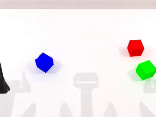
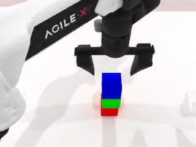
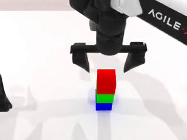

stack_blocks_three 的资产与动作，指令用位置槽指定堆叠顺序，判定读末态栈序。IF-Ext 的第 5 个单轴任务测序列能力：诊断的失败模式是"3 个都放对了但无视顺序"（顺序盲假阳性）。约束是 action / object 都 in-domain（不超出 raw task 动作范围、自然复用资产）。于是先在 native 里盘"多物体有序操作"：
| Native 任务 | 物体 / 动作 | check 查顺序? | 顺序编码在哪 |
|---|---|---|---|
stack_blocks_three | 3×create_box · 单物体 pick→place 堆叠 | ✓ 查 | 末态竖直 z 栈序 |
blocks_ranking_rgb | 3×create_box · pick→place 到位 | ✓ 查 | 末态水平 x 序 |
place_cans_plasticbox | 2×can+box · 双臂同时入盒 | ✗ 只查"都在" | 无（末态无序） |
put_bottles_dustbin | 3×bottle+桶 · 双臂 handover 入桶 | ✗ 只查"都在" | 无（末态无序） |
place_cans_plasticbox / put_bottles_dustbin）末态不编码顺序 → 逼出三大风险：① 末态无序 → 得写轨迹逐 step 采样判定；② 单臂 3× place-into-container 复合（≈0.9³ 天花板低）；③ 判定全新写。而 stack_blocks_three 把顺序编进末态竖直栈序 → 三个风险同时消失：动作是 native 原样 pick+place、资产 create_box（颜色白嫖）、check_success native 已在读顺序。用户第一时间点出：native 只演示过红底→绿→蓝一种顺序，stack 会不会过拟合？答案要分两层。
stack_blocks_three 的块初始位置每局随机 → "先抓哪个颜色"是纯 grounding 决策，"抓块→放栈上"是同一 native 运动程序。policy motorically 完全能摆蓝底栈，摆不摆取决于读没读指令 → 失败可归因为"没跟随指令"，不是"做不出"。ifext-eval-test-only（无 finetune 数据、只有 zeroshot/native-ft），先验必然存在、无法用全排列数据抹掉 → 方向性指标 + 报 default/non-default gap 是强制项。gap 才是诊断量，非默认序绝对成功率低是预期。| 判定成本 | 过拟合 / 先验 | 根因 | |
|---|---|---|---|
| Stack | 低（末态栈序） | 较高 | native 固定红底 + 色→高度纠缠 |
| Container | 高（末态无序→轨迹逐step） | 低 | 全进同一 bin、native 按位置排序填 → 无色→顺序/位置纠缠 |
一句话：stack 用"末态好判"换"先验较强"；container 用"先验较弱"换"末态难判"。同一条 trade 曲线两端，都 in-domain、互补不重复。本轮先做判定零风险的 stack。
native stack_blocks_three.json 的模板本就是"A 底 C 顶"的位置语义（stack {C} on {B}, {B} on {A}），只是把 {A} 钉死成红色。本任务反过来——{A}=底 / {B}=中 / {C}=顶 的位置槽，颜色→槽映射随 mode 变，同一模板池路由全 6 序：
模板固定：Stack {C} on {B}, and {B} on {A}.
mode0 默认(红底)：{A}=red block {B}=green block {C}=blue block
mode5 反序(蓝底)：{A}=blue block {B}=green block {C}=red block
# 6 排列共享占位符集 {A,B,C} → 框架标准路由无法区分 → 干净，不 hack 框架
剔掉了 native 里所有没说全顺序的模板（如 "stack them"），schema 硬性禁止翻转/省略措辞。
scene_seed = seed // 6 # 决定 3 块随机位 + 颜色（load_actors 顶部重播种） mode = seed % 6 # 决定 6 种排列之一 # 连续 6 seed = 像素级同帧的同 3 块，只有指令顺序不同
check_success = L2 正序 + 夹爪开（collect gate）；eval_signals() 拆 L1/L2/is_default 给 policy eval 报 default vs non-default gap。perm 串起三者）一个 seed 被拆成两路，各自只喂一件事，互不串味：seed//6 只决定场景几何，seed%6 只决定顺序。而 seed%6 推出的那个 perm，同时喂给"指令渲染"和"成功判定"——这是本任务的完整性关键：判据 grade 的，正好是指令 command 的那个顺序。
seed ├─ scene_seed = seed // 6 ──► np.random.seed → 3 块随机位 + 固定红/绿/蓝 # 只管场景，与顺序无关 └─ mode = seed % 6 ──► perm = PERMS[mode] = (底, 中, 顶) 三个颜色索引 ├─► 指令：{A}=颜色[perm0]、{B}=颜色[perm1]、{C}=颜色[perm2] → 模板渲染命令顺序 └─► 判定：check 读 blocks[perm0/1/2]，查 中在底上 ∧ 顶在中上（L2） # 指令与判定共用同一个 perm 作 single source of truth → 不会"命令一个顺序、却按另一个打分"
连续 6 个 seed = 同一 scene_seed、跑遍 6 个 mode → 同场景 × 6 种命令顺序；第 7 个 seed 翻到下一个场景。举例（模板取 Stack {C} on {B}, and {B} on {A}）：
| seed | scene _seed | mode · perm（底→顶） | 指令渲染示例 | check（L2）断言 |
|---|---|---|---|---|
| 0 | 0 | 0 · 红绿蓝 | Stack blue on green, and green on red. | 绿在红上 ∧ 蓝在绿上 |
| 1 | 0 | 1 · 红蓝绿 | Stack green on blue, and blue on red. | 蓝在红上 ∧ 绿在蓝上 |
| 5 | 0 | 5 · 蓝绿红 | Stack red on green, and green on blue. | 绿在蓝上 ∧ 红在绿上 |
| 6 | 1 | 0 · 红绿蓝 | 顺序同 seed0，但 scene_seed=1 → 新场景（3 块换位置） | |
scene_seed=0 下（seed 0–5），初始 3 块位置完全一致（§4 证据 ep0/ep5 初始帧像素级相同），变的只有指令顺序与随之联动的判据 → 唯一区分量就是顺序，轴隔离成立。真实 collect 6 个 demo（seed 0–5，同一 scene_seed=0，覆盖全 6 序，0 失败）。下面 ep0（默认红底）与 ep5（反序蓝底）是最强对比——初始画面完全相同，末态栈序相反。



tests/stack_sequence/sweep_per_perm.py，N=20，gate 90%）| perm | 顺序（底→顶） | L1 成栈 | L2 正序 | 判定 |
|---|---|---|---|---|
| 0 | 红绿蓝 默认 | 20/20 | 100% | PASS |
| 1 | 红蓝绿 | 19/20 | 95% | PASS |
| 2 | 绿红蓝 | 19/20 | 95% | PASS |
| 3 | 绿蓝红 | 19/20 | 95% | PASS |
| 4 | 蓝红绿 | 20/20 | 100% | PASS |
| 5 | 蓝绿红 | 20/20 | 100% | PASS |
| CE | 命令红底 / oracle 堆蓝底 | 20/20 | 0% | PASS（拒） |
| 测试 | 内容 | 结果 |
|---|---|---|
test_instruction_routing.py（Layer A） | 38 模板全含 {A}{B}{C}、零臂槽、全部路由；颜色→槽渲染出命令顺序（perm0 红底 / perm5 反序蓝底） | 6/6 |
test_check_success.py（Layer B） | 场景解耦（seeds 0–5 同场景、全 6 序）；关键反例 perm0/perm5 反序有效栈 → L2 fail、L1 true；xy 超 eps / 只堆两个 / 散开 均判负；含夹爪的 check 正例一致 | 11/11 |
ifext-ft 下干净；zeroshot/native-ft 下"红底"先验会压低非默认序跟随率——这是被测量、非任务缺陷，靠方向性 gap 读，别看非默认绝对值。all_tasks_plus_if.yml 合并清单本仓尚不存在（laptop/bottle_verb 也没接），留待整体 eval 清单统一。./bridge_tasks.sh conda activate RoboTwin # oracle spike：逐排列率 + 反例（gate 90%） python tests/stack_sequence/sweep_per_perm.py 20 # Layer A 指令路由 / Layer B check_success python tests/stack_sequence/test_instruction_routing.py python tests/stack_sequence/test_check_success.py # 真实采集 6 个 demo（seed 0–5 = 同场景 6 序）→ 视频在 data/.../video/ cd third_party/robotwin && python script/collect_data.py stack_sequence stack_sequence
核心文件：tasks/envs/stack_sequence.py（env，spike+生产共用）· tasks/task_instruction/stack_sequence.json（28 seen + 10 unseen 位置槽指令池）· tests/stack_sequence/*.py（sweep + Layer A/B）。
深读：设计与决策全过程见 design-discussion.md（§1 盘点 · §5 过拟合镜像 · §8 场景/指令/判定拍板 · §9 spike 结论 · §10 量产+Layer A/B）。